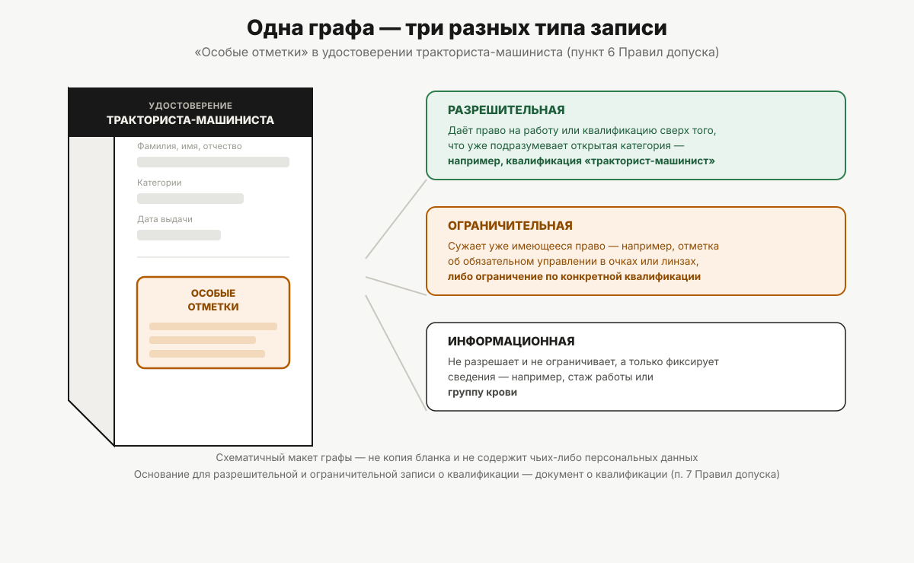
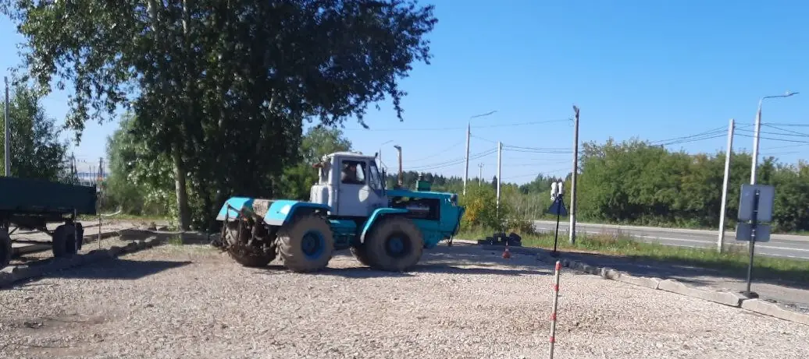
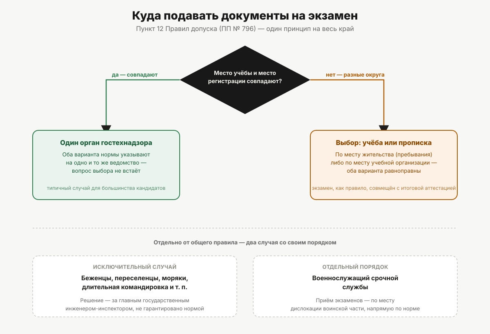

Предпросмотр серии статей «Права тракториста»
30 статей, сгруппированы по разделам. Отдельный хаб для просмотра серии целиком — не боевой сайт и не индексируется поисковиками.
Отчёт о серии статейКак устроена серия, на каких документах стоят её факты и как статьи выходят на сайте — понятными словами.Категории и допуск
 Чем права тракториста отличаются от водительских
Чем права тракториста отличаются от водительскихГостехнадзор вместо ГИБДД, свои категории, своя медсправка и свой экзамен. Разбираем шесть отличий удостоверения тракториста-машиниста от водительского удостоверения по действующим правилам.
На сайте: 25 сентября 2026, 09:00
 Категории удостоверения тракториста-машиниста
Категории удостоверения тракториста-машинистаДевять категорий самоходных машин: что попадает в A I–A IV, чем B отличается от C и D, что такое E и F. С точными формулировками из Правил допуска и границами по мощности двигателя.
На сайте: 25 сентября 2026, 09:00
 Со скольких лет можно получить права на трактор
Со скольких лет можно получить права на тракторПять возрастных порогов вместо одного: 16 лет на внедорожную мототехнику, 17 на большинство тракторов, 18 на тяжёлые колёсные, 19 и 22 — на внедорожные автомобили. Откуда берутся цифры.
На сайте: 1 октября 2026, 09:00
 Как определить категорию под свою технику
Как определить категорию под свою техникуМощность в киловаттах, тип хода и назначение машины определяют категорию. Показываем, где взять исходные данные и как не ошибиться на границах 25,7 и 110,3 киловатта.
На сайте: 9 октября 2026, 09:00
 Категория F и квалификация тракториста-машиниста
Категория F и квалификация тракториста-машинистаКомбайны и другие самоходные сельхозмашины — отдельная категория с самой длинной программой обучения. Что даёт квалификация «тракторист-машинист» и как она попадает в удостоверение.
На сайте: 19 октября 2026, 09:00
 Категории A II, A III и A IV: кому они доступны
Категории A II, A III и A IV: кому они доступныТри категории, к которым не допустят без российских водительских прав и года стажа управления. Разбираем, какая техника сюда относится и почему требования строже, чем к тракторам.
На сайте: 27 октября 2026, 09:00
 Какой документ даёт право управлять самоходной машиной
Какой документ даёт право управлять самоходной машинойСвидетельство о профессии рабочего, удостоверение тракториста-машиниста, временное удостоверение и индивидуальная карточка: кто их выдаёт, что каждый подтверждает и какой даёт право управления.
На сайте: 12 ноября 2026, 09:00
Обучение и экзамен
 Как получить права тракториста-машиниста
Как получить права тракториста-машинистаОт выбора категории до пластикового удостоверения: медзаключение, обучение, документы, три экзамена и выдача. Порядок шагов и что на каждом из них может пойти не так.
На сайте: 25 сентября 2026, 09:00
- Сколько длится обучение на тракториста
Типовая программа Минсельхоза — 450 академических часов на категории B, C, D и E и 554 на F. Разбираем учебный план по предметам и считаем, во что это превращается в календаре.
На сайте: 27 сентября 2026, 09:00
 Экзамен в гостехнадзоре: как он устроен
Экзамен в гостехнадзоре: как он устроенДва теоретических экзамена и один практический, строго в заданной последовательности. Что проверяют на каждом, сколько действует сданная теория и кого не допустят вовсе.
На сайте: 3 октября 2026, 09:00
- Документы для получения прав тракториста
Что кандидат подаёт в гостехнадзор для экзамена и что дополнительно нужно для замены удостоверения. Какие документы ведомство запрашивает само, а какие приносите только вы.
На сайте: 11 октября 2026, 09:00
 Медицинское заключение по форме 071/у
Медицинское заключение по форме 071/уДля самоходных машин действует своя форма медицинского заключения, утверждённая отдельным приказом Минздрава. Чем она отличается от водительской справки и на каком этапе её спрашивают.
На сайте: 17 октября 2026, 09:00
 Практический экзамен на самоходной машине
Практический экзамен на самоходной машинеСначала площадка или трактородром, затем маршрут в реальных условиях. Перечень манёвров по Правилам допуска, порог в 75 процентов и требования к самой экзаменационной машине.
На сайте: 25 октября 2026, 09:00
- Теория в гостехнадзоре: билеты и порог сдачи
Экзаменационные билеты утверждает Минсельхоз, сдать нужно не менее 75 процентов. Владельцы автомобильных прав освобождены от блока ПДД — разбираем, что это меняет на практике.
На сайте: 2 ноября 2026, 09:00
 Что делать, если не сдал экзамен
Что делать, если не сдал экзаменПовторная попытка не раньше чем через семь дней, сданная теория действует три месяца, три подряд заваленные практики — снова за обучение. Разбираем последовательность и как в неё не попасть.
На сайте: 6 ноября 2026, 09:00
- Госпошлина за удостоверение тракториста
За что берут пошлину, чем отличается бумажное удостоверение от пластикового, кто от пошлины освобождён и в какие сроки гостехнадзор обязан оказать услугу.
На сайте: 10 ноября 2026, 09:00
 Обмен иностранного удостоверения тракториста
Обмен иностранного удостоверения трактористаУдостоверение другой страны, документ из республик бывшего СССР и российское удостоверение старого образца меняют на удостоверение тракториста-машиниста. Даты-отсечки, перевод и экзамены при обмене.
На сайте: 16 ноября 2026, 09:00
Техника и ответственность
 Права на квадроцикл и снегоход
Права на квадроцикл и снегоходВнедорожная мототехника подчиняется гостехнадзору, а не ГИБДД, и требует отдельной категории. Что относится к A I, с какого возраста её дают и чем это отличается от мотоциклетных прав.
На сайте: 29 сентября 2026, 09:00

Квалификации в особых отметках удостоверенияКатегория открывает машину по мощности, квалификация — по виду работ. Разбираем, откуда берутся отметки «тракторист», «машинист экскаватора», «водитель погрузчика» и зачем они нужны.
На сайте: 5 октября 2026, 09:00
 Какая категория нужна на погрузчик
Какая категория нужна на погрузчикПогрузчик — не отдельная категория, а машина, которую относят к B, C или D по мощности двигателя, плюс квалификационная отметка. Разбираем, как это работает на практике.
На сайте: 13 октября 2026, 09:00
 Трактор с прицепом и навесным оборудованием
Трактор с прицепом и навесным оборудованиемВ удостоверении тракториста нет «прицепной» категории — работа в агрегате входит в основную. Откуда берётся путаница с автомобильными BE и CE и что сдают на практическом экзамене.
На сайте: 21 октября 2026, 09:00
 Нужны ли права на мотоблок и минитрактор
Нужны ли права на мотоблок и минитракторГраница проходит не по размеру машины, а по тому, подлежит ли она государственной регистрации. Разбираем критерии и объясняем, почему мотоблок и минитрактор решаются по-разному.
На сайте: 29 октября 2026, 09:00
 Ответственность за управление без прав
Ответственность за управление без правЧто грозит за нарушение правил эксплуатации самоходной машины, как устроено лишение права управления и какой порядок возврата удостоверения после окончания срока лишения.
На сайте: 4 ноября 2026, 09:00
- Удостоверение тракториста в обход обучения
Правила допуска требуют профессионального обучения в организации со свидетельством о соответствии, а сведения об удостоверениях хранятся в федеральной системе учёта. Где ломается обходной путь.
На сайте: 14 ноября 2026, 09:00
Пермский край
 Гостехнадзор Пермского края и права тракториста
Гостехнадзор Пермского края и права трактористаЭкзамены принимает и удостоверения выдаёт инспекция гостехнадзора Пермского края, а не ГИБДД и не учебная организация. Что входит в её полномочия и как выбирают место сдачи.
На сайте: 25 сентября 2026, 09:00
 Запись на экзамен в Пермском крае
Запись на экзамен в Пермском краеЗаявление подают через Госуслуги, МФЦ или лично. Разбираем сроки, которые обязан соблюдать региональный орган, и почему место сдачи привязано к прописке или к учебной организации.
На сайте: 7 октября 2026, 09:00
- Замена и восстановление удостоверения в Перми
Через десять лет удостоверение меняют, при утрате — восстанавливают. Когда замена идёт без экзаменов, какие документы нужны и что ведомство делает само за два месяца до срока.
На сайте: 15 октября 2026, 09:00

Работа тракториста в Перми и краеСельское хозяйство, коммунальная техника, стройка и лесозаготовка: где в регионе требуют удостоверение тракториста и какие категории и квалификации спрашивают чаще.
На сайте: 23 октября 2026, 09:00

Права тракториста жителям районов краяЭкзамен принимают по месту жительства или по месту нахождения учебной организации. Что это значит для жителей округов Пермского края и когда допускают сдавать не по прописке.
На сайте: 31 октября 2026, 09:00
 Кому в Пермском крае нужны права тракториста
Кому в Пермском крае нужны права трактористаЧетыре типичные ситуации жителя Пермского края — от минитрактора на участке до работы по подряду. Разбираем, в какой из них удостоверение обязательно, а в какой нет.
На сайте: 8 ноября 2026, 09:00